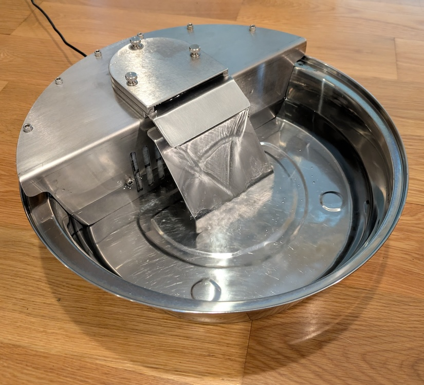
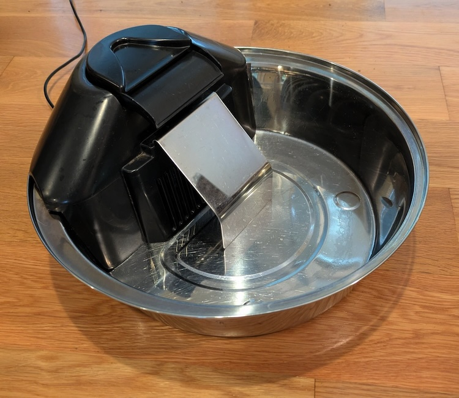
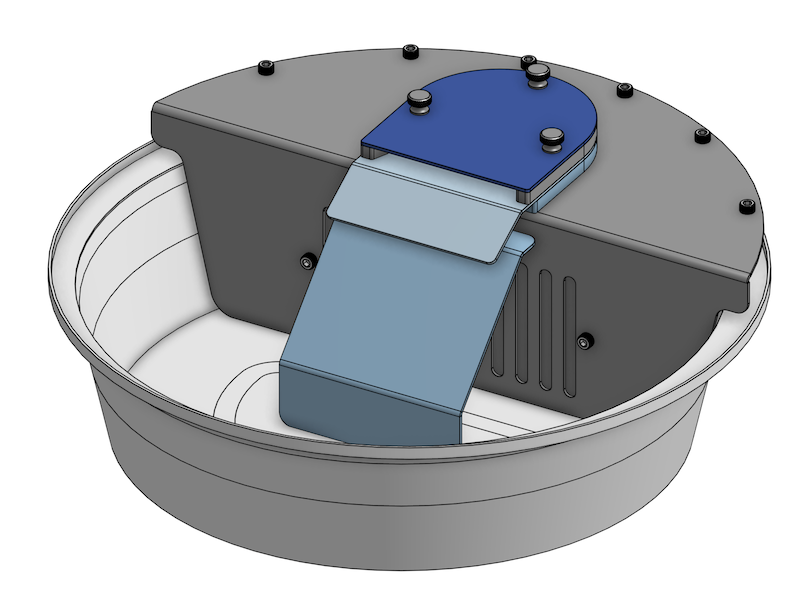
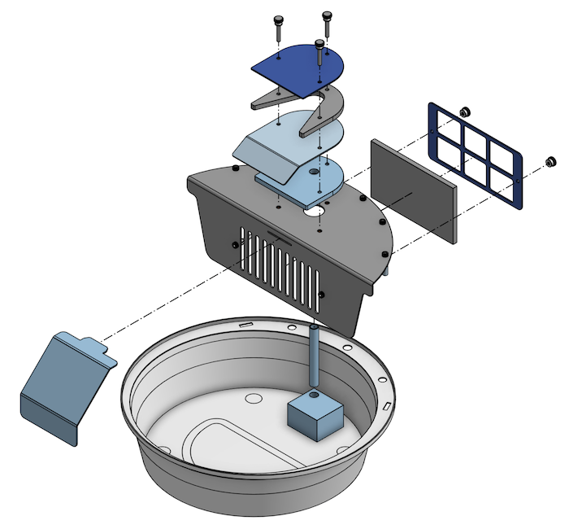
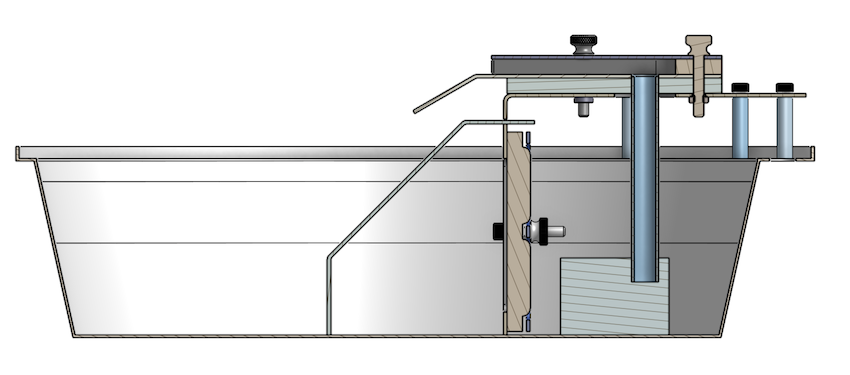
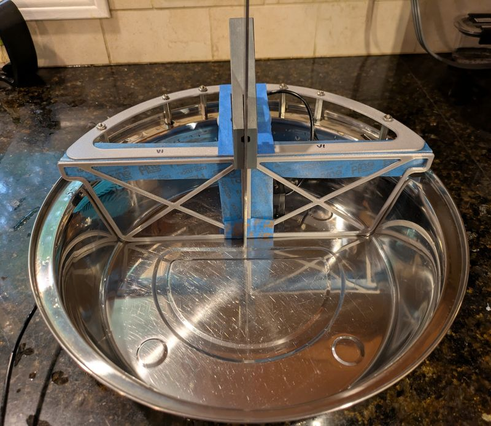
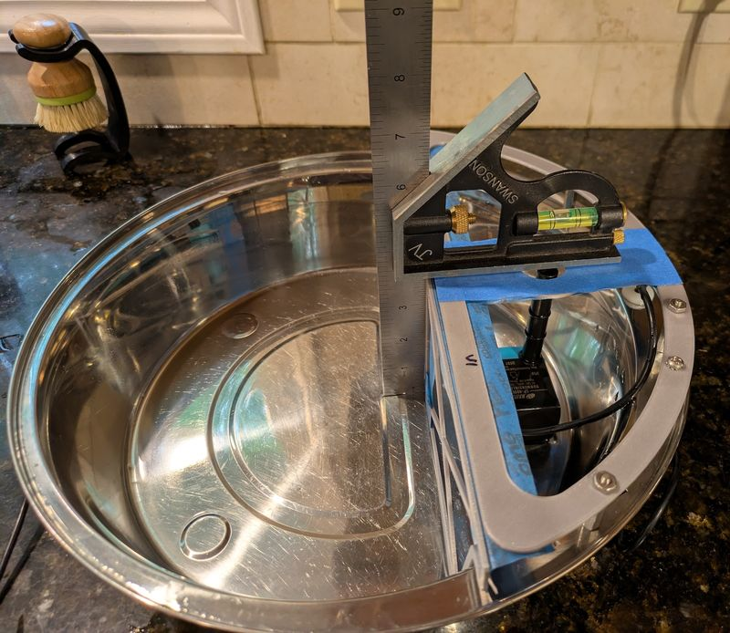
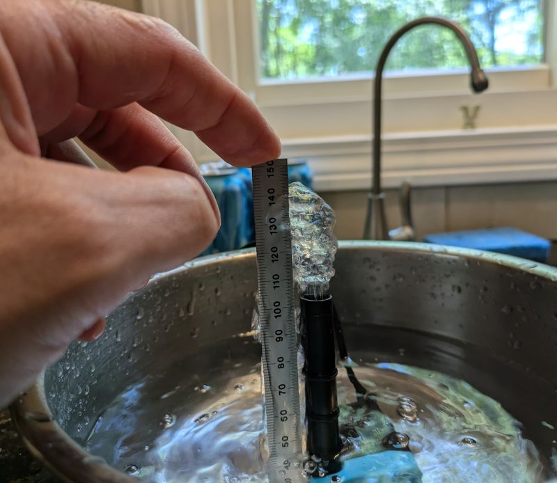

We made a new water bowl fountain out of stainless steel for our dogs. The old water bowl fountain was made of plastic and as it aged, felt like the parts could not get fully clean with hand washing. The new design comes apart with just a few thumb screws for cleaning. If needed, the stainless steel parts can go in the dishwasher or even be sanitized in the oven or in boiling water.
The new design is made from food-grade stainless-steel sheet metal. Sheet metal was used because parts can be laser cut and bent, which is much less expensive than machined parts. It was designed in OnShape and fabricated by SendCutSend in about a week.
Photo of the stainless steel bowl with the pump operating:

Photo of the old plastic fountain that it replaced:

View of the bowl from OnShape CAD tool:

Exploded view of the bowl showing how the pieces come apart for cleaning:

Cross-section view showing how everything fits together:

Before cutting metal, I 3D-printed templates to test fit the design to the bowl. I used a parametric mechanical model in OnShape (the first time I did that on a large-scale design). The major dimensions of the fountain parts were driven off the CAD model of the bowl. So adjusting the fit required tweaking the bowl model to better match reality.


I replaced the pump's plastic pipe with a stainless steel pipe. However, the wall thickness of the metal pipe was less, giving a larger cross-sectional area, which affects the head pressure at the pump. I took some crude measurements to estimate the pump's capability and calculate flow & pressure. But in the end, I calculated the total volume of water above the pump (and hence the weight) of both designs and made them equal. Flow in the new design appears to be a bit more than the old.

One non-obvious detail was the fillet on the water channel exit. To minimize sharp edges that might cut the dog's tongue, I added fillets to all sheet metal corners. However, in testing with a 3D-printed part, I found that using a full-radius on the end of the water channel had a tendency for the water to exit on the sides.
The surface tension of the meniscus against the wall of the channel would pull the water around the radius to the side. Replacing that with a (relatively) sharp corner greatly reduced this effect. I used a 1/16" radius in the final design as a compromise and is working well.
[In this view, the top plate and thumb screws are removed to show the water channel.]